TASER GAME
Combining paintball and laser tag — real consequences, zero mess.
FreeRTOS · ESP-NOW · Custom PCB · Li-ion
The Problem
The gap between Laser Tag and Paintball is too large. There needs to be a middleground, where the risk of getting hurt is zero, but risk of feeling pain is large. Paintball is very immersive because the consequences of getting hit are very real and tangible. However, getting hit in the neck leaves marks for days and the whole shenanigans is a mess that must be performed in a dedicated dirty space and your shoes might as well go directly in the washing machine when you return. Another drawback of Paintball is lack of statistics for a paintball game. Nobody knows who has hit who or who did best.
The Hypothesis
The problem seemed simple to solve: Just build a common IR LED + receiver system with an esp32 and add a shock circuit reverse engineered from a generic shock collar. I used a custom hobby laser tag system built by a peer as the baseline and bought similar components for the first 2-pistol prototype in order to test the IR communication.
Iteration Log
V1
After the two-pistol prototype worked, i assembled 8 more and added a master esp32 to periodically ask each pistol for its HitData to assemble a single true scoreboard based on only the IR hits. This means lost wifi packets never becomes a problem. If one pistol is outside range from the master, then the scoreboard is simply not updated with that pistols information until it returns in range. In this way the IR is always the truth. HP is ALWAYS lost regardless of the hitconfirmation reaching the shooter or not. The first 10 pistol set utilizes hardcoded master/slave MAC-addresses for simplified code. While it successfully demonstrated the core mechanics of IR hit detection and ESP-NOW communication, it is not a scalable solution as replacing one device means all other devices must be reprogrammed.
Additionally, i took the first set to the laser tag venue VRGame in Nørresundby. The owner was very impressed with the prototype and expressed that the added shock circuit is a unique and valuable proposition. The owner also explained the hurdles they have with their existing system such as manually turning all pistols on and connecting them - providing valuable insight into the important "everyday" convenience perspective of the venue owner. The owner told me that, in order for him to consider a system such as mine, it had to consist of physically larger and more robust pistols. The users are not very caring of the hardware and thus it needs to be able to take a beating.
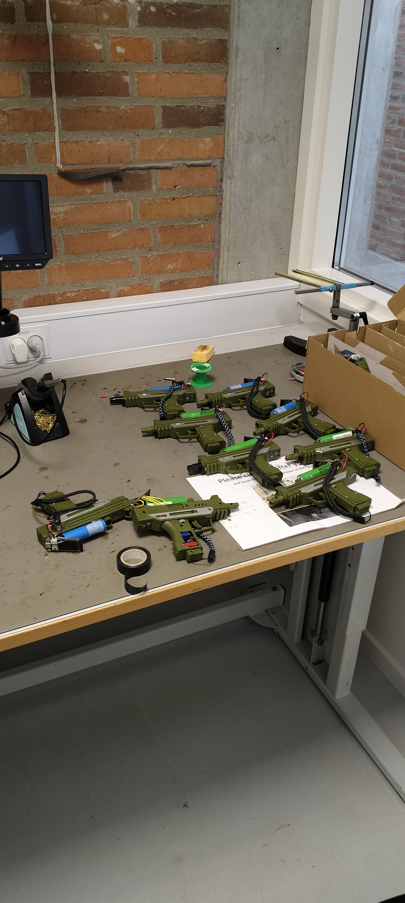
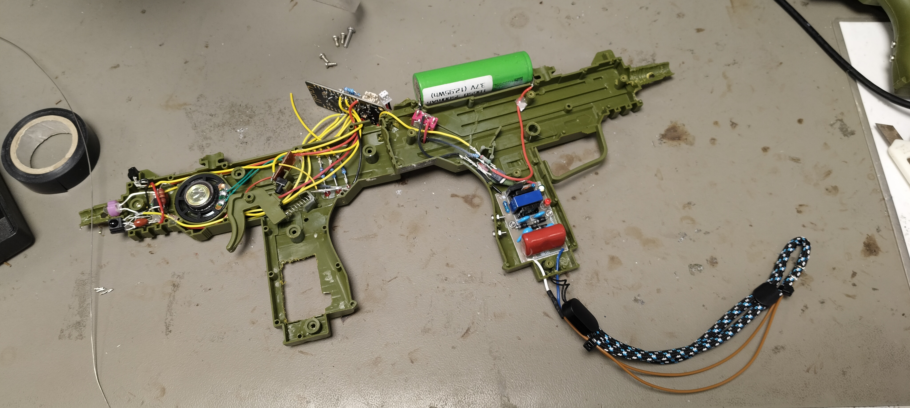
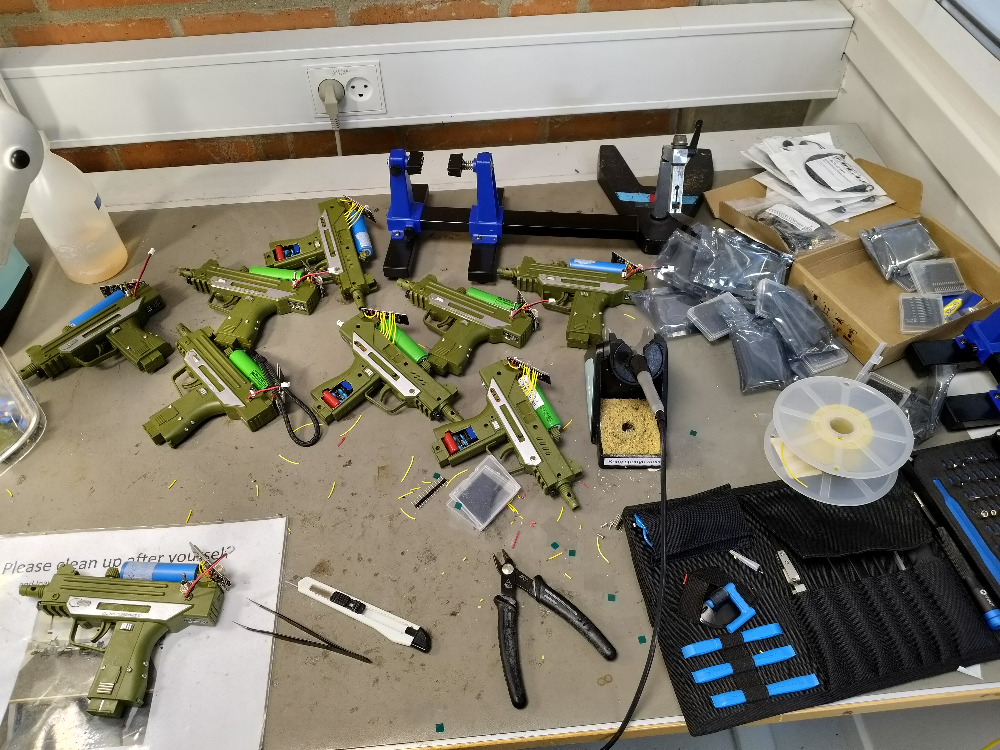
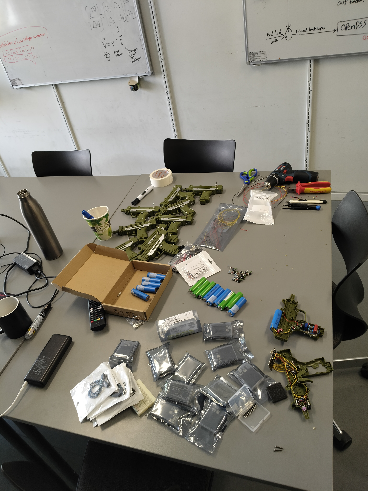
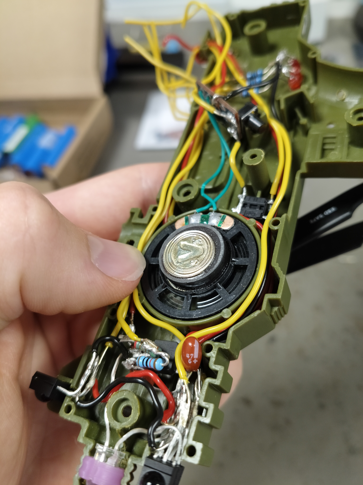
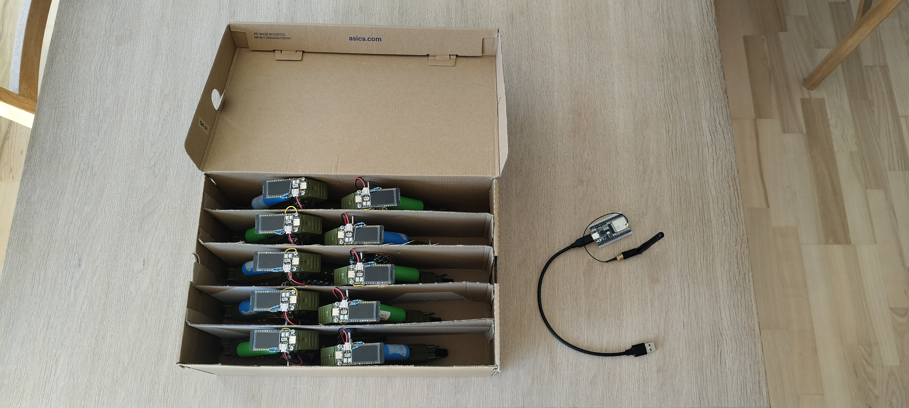
V2
The Second iteration introduced a non-hardcoded master/slave architecture. We implemented dynamic pairing where the master could dynamically broadcast and poll slaves, managing active players without hardcoded MAC addresses. Additionally, we sourced larger toy pistols with added vibration feedback motor control and switched to a PCB for the switching circuits instead of manually soldered components. The theme of the second iteration was scalability and durability. Specifically a focus on reducing component count, reducing manual labor and building the pistol to survive violent use.
Major changes include:
- Switching from triple-LED indicators to the single inbuilt NEOPIXEL on the microcontroller.
- Switching from bulky Tdisplay esp32-s3 microcontroller to smaller Waveshare esp32-s3 variant.
- Switching to larger toy pistol allowing all components to fit securely inside the housing.
- Switching from flimsy cord to comfortable and durable watch bands for the shock circuit.
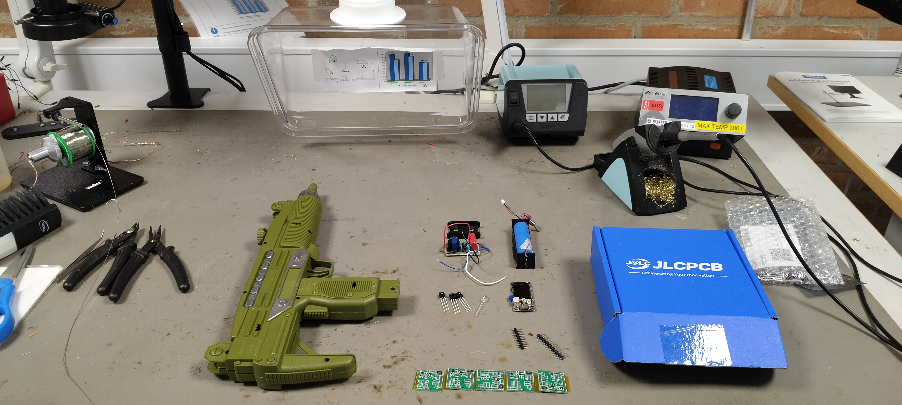

.jpg)

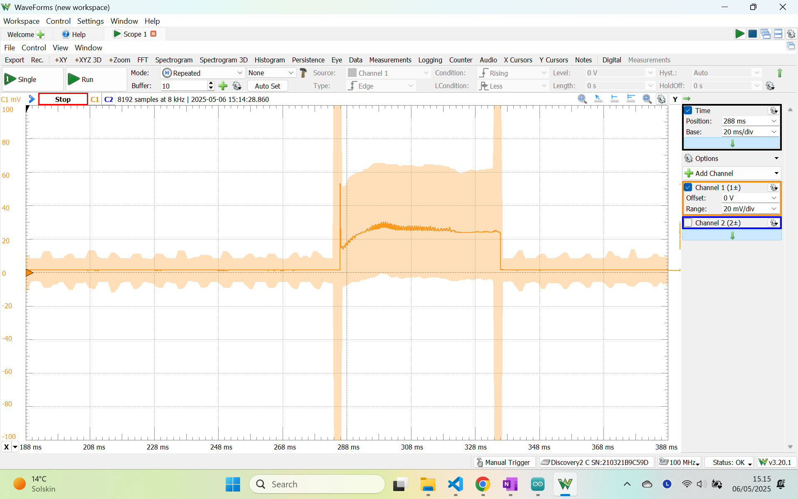
Technical Build
Hardware Architecture
- Topology: Master/Slave architecture with Peer-to-Peer elements. 1 Master "Base Station" currently 10 "Slave" pistols.
- Microcontrollers:
- Slaves: Waveshare ESP32-S3 1.47" LCD boards.
- Master: ESP32 WROOM with external antenna.
- Communication: ESP-NOW protocol. Master polls sequentially (ScoreboardData), Slaves respond with running totals (HitData). Immediate hit confirmations (HitConfirm) are sent via direct P2P between slaves.
Electronics & PCB
- IR System: VSLY5940 IR LED controlled by an N-channel MOSFET. 3x TSOP32338 receivers per gun.
- Feedback Systems: Existing toy gun speaker and vibration motor wired to switching circuits on the added PCB.
- Shock Module: 4V to 1800V converter controlled via N-channel MOSFET for micro-ampere short shocks.
- Power: 18650 Li-ion cell utilizing the ESP32's inbuilt charging circuit. Power bank for the base station.
- Display: The 1.47" TFT display provides information in real time.
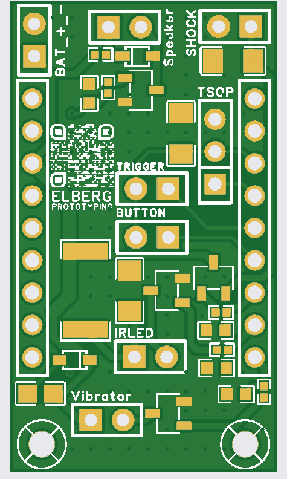
Embedded Software — RTOS
- Protocol: NEC protocol (38kHz carrier, 67.5ms packet duration) for reliable hit transmission. Packets include PlayerID, Damage, and an 8-bit Timestamp for duplicate hit rejection.
- Task Architecture: FreeRTOS handles concurrent tasks. The tasks are divided on the dual-core esp32-s3 to group all the tasks without strict timing needed on core 0, while network tasks are running on core 1.
- Data Integrity: Slaves maintain authoritative running totals of hits received. The master aggregates complete data, providing eventual consistency and correct scores even with intermittent connections. Strict MUTEX implementation in critical sections mean shared resources are never corrupted.
Tablet UI
- Interface: A tablet connects to the Master base station's web server.
- Features: Provides an easy user interface for game configuration (game modes, team count, duration). During the game, it displays a real-time global scoreboard showing Player Kills, Player Damage, and Team Scores. After the game it shows the final scoreboard and highlights the top performers.
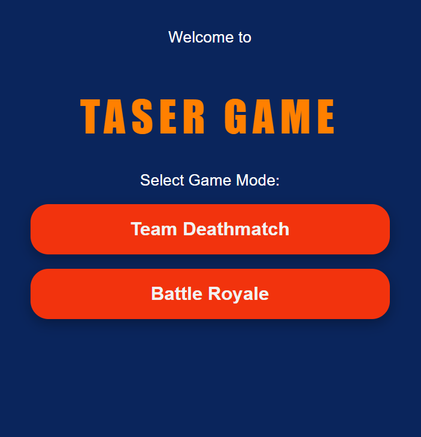
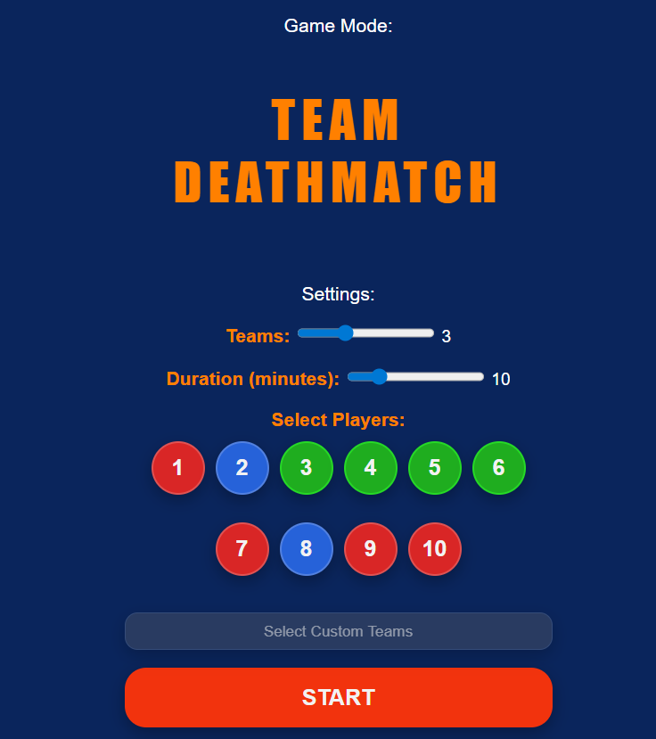
Time Investment
| Phase | Hours (approx) |
|---|---|
| Research & System architecture | 50 |
| Manual assembly v1 | 30 |
| PCB design & assembly v2 | 20 |
| Embedded software development v1 and v2 | 40 |
| Total | 140 |
User Validation
The v1 set was tested with a gymnastics team to evaluate the shock magnitude, ease of use and game mode logic. The test yielded the following feedback from the users:
- Shock magnitude is perceived as too high for the lowest selection and does not change significantly with the medium and high level. This shows that the linear duration parameters do not equate to linear pain perception. Fix: make the low setting a shorter shock duration. Keep medium duration and increase high duration to differentiate those more.
- Use was intuitive and game mode logic worked. Tablet UI was easy to navigate.
Lessons Learned
Manual assembly and retrofitting took much more time than anticipated -> Many hours can be saved by designing a PCB earlier and planning for least possible amount of physical change when retrofitting an existing product.